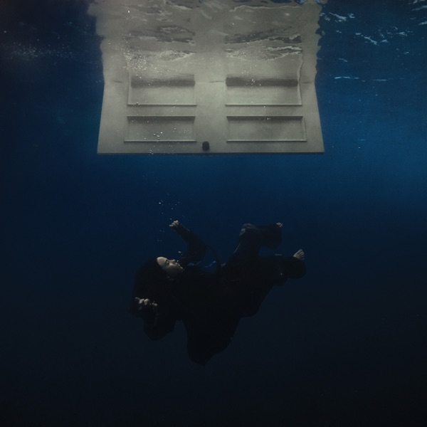
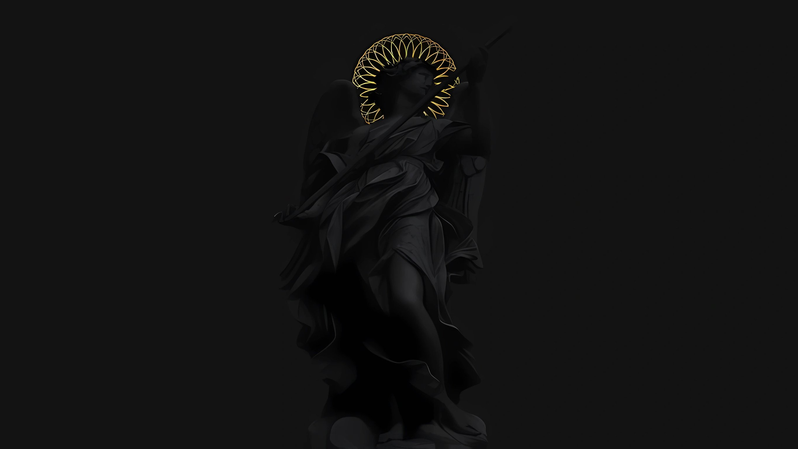

EDITORIAL PICK
SOUND THAT MOVES WITH YOU
Find your
flow.
A quieter home for all the music you love. Discover your next favorite, build your queue, and keep the sound going.



Night DriveSoundFlow selection
YOUR SOURCESYouTubeSoundCloudLocal files
One library. Your rules.MADE FOR THE MOMENTA little less noise.
A little less noise.
A lot more music.
Your library stays yours. Browse a fresh mix, revisit your favorites, and shape what plays next.

Preview build. No audio in this demo.
ALWAYS WITHIN REACHYour music.
Your music.
Never in the way.
Meet Island: a compact player for quick controls and an expanded view when you want the full picture. Skip, pause, or adjust volume without losing your place.
Meet Dynamic Island ↗Night DriveKori
Blue hourSoundFlow selection‹Ⅱ›
Compact when you listen.
Expanded when you need it.
THE REAL SOUNDFLOWNot just a concept.
Not just a concept.
Your actual player.
Captured directly from the Windows application. Click a screenshot to view it at full size.
Screenshots show actual settings and connections; music cards above are an illustrative preview.
Make room for your music.
Download the latest build ↓Portable ZIP ↗Preview 1.1.1 · Build 7773a52d8d83 · Not publisher-signed. Exit SoundFlow before installing.
Night DriveSoundFlow selection
1:24